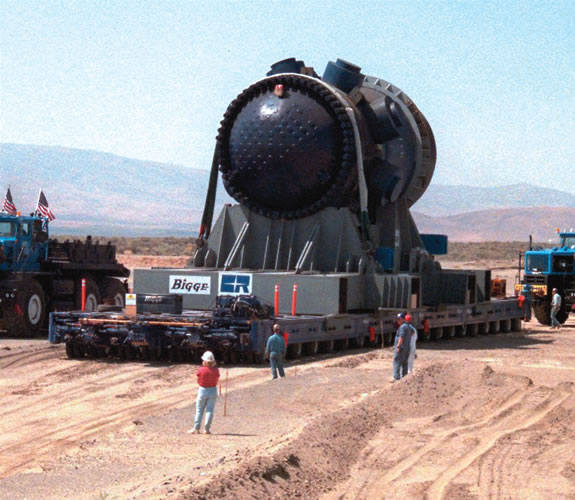

AP PHOTO/STEVE GOWEN
A construction worker walks through the main tunnel inside Yucca Mountain in Nevada, which the U.S. government has proposed as the long-term storage facility for spent nuclear fuel and other high-level radioactive waste. The repository is tentatively scheduled to begin accepting waste in 2012, but it is widely opposed by Nevada residents because of safety issues, security concerns and seismic activity inside the mountain.